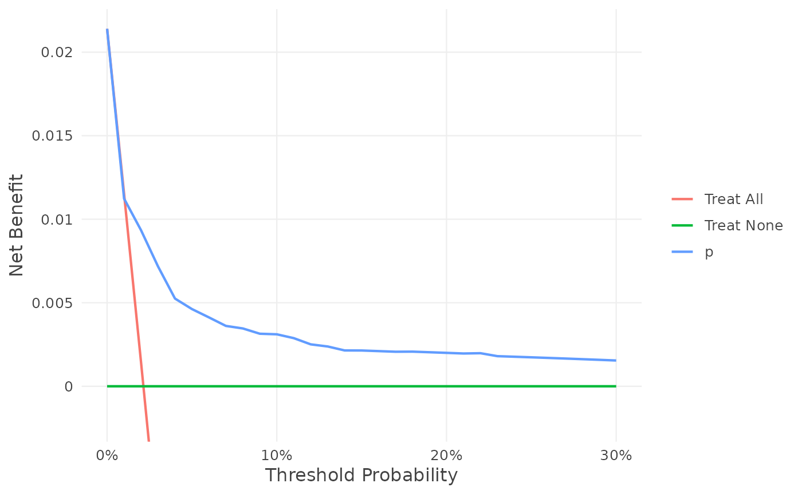
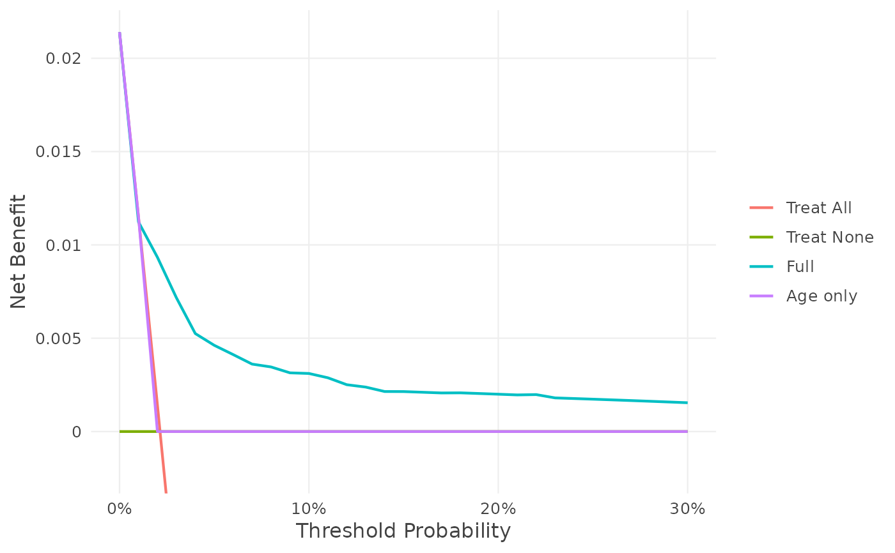

Net benefit of prediction models in a validation sample
nb_val.RdComputes the net benefit of using a model (treat if predicted risk is at or above the threshold), of treating everyone, and of treating no one, at each risk threshold, for a binary, survival or competing-risks outcome, for one model or several models validated on the same patients. This is the core quantity every other voipred validation metric (ΔNB, P(useful), P(best), EVPI, EVSI) is built on.
Usage
nb_val(
data,
predicted_risk = NULL,
outcome,
thresholds = seq(0, 0.99, by = 0.01),
horizon = NULL,
cause = NULL,
cipcw = NULL,
weights = NULL,
prior = nb_improper(),
predict_function = NULL,
label = NULL,
subgroup = NULL,
interval = NULL,
n_sim = 1000
)Arguments
- data
A data frame: the validation sample, one row per patient, with the outcome columns when
outcomenames them (and, for a fitted model, every covariate it uses; with cIPCW, every covariate of the censoring model).- predicted_risk
The predicted risks of the patients in
data: a numeric vector, one probability per row ofdata(in its row order), e.g.val$p. Alternatively, the name of the column ofdatathat holds them, e.g."p". For survival outcomes, the risk of the event byhorizon(competing risks: ofcausebyhorizon). This is all the validation needs. A fitted model can also be given instead: voipred predicts the risks from it (see "Predicting the risks from a model"). For several models: a list, each element a vector of risks, a column name or a fitted model, e.g.list(Full = fit1, Age = "p_age")(see "Several models").- outcome
The observed outcome, one per row of
data:binary: a column name (
"y"), a vector, or a one-sided formula (~ y); 0/1, logical (TRUEis the event) or a two-level factor (the event is level"1"if present, otherwise the second level);survival:
~ Surv(time, status)(or aSurvobject, or the name of aSurvcolumn), with status 1 = event and 0 = censored;competing risks:
~ Surv(time, status)wherestatusis a factor whose first level is censoring and the other levels are the event types, e.g.factor(code, 0:2, c("censored", "relapse", "death")). Numeric codes 0/1/2 are not accepted (Surv() would turn 2 intoNA).
Formulas are evaluated in
data. Only right-censored outcomes are supported; missing or negative times and missing statuses are errors.- thresholds
Risk thresholds in [0, 1), in any order (kept as given). At threshold
za patient is treated when the predicted risk is>= z; a risk of exactly 0 is never treated.- horizon
Survival and competing-risks outcomes only (required there, an error for a binary outcome): the time by which the risk is predicted and the event counted, a single positive number in the units of the survival times. It must be within the follow-up of at least one patient.
- cause
Competing-risks outcomes only: the event type of interest, one of the event levels of the outcome (default: the first event level). The net benefit is for "this cause by the horizon"; patients with another cause by then count as not having the event. The cause is passed to the model by its label, or by its position among the event levels if the model numbers its causes; so a model that numbers its causes must number them in the order of the outcome's event levels.
- cipcw
Survival and competing-risks outcomes only: how censoring is handled.
NULL(default): Kaplan-Meier / Aalen-Johansen, which assumes censoring is independent of the outcome. To let censoring depend on covariates (conditional IPCW), give:the covariates of the censoring, as a one-sided formula, e.g.
cipcw = ~ age + nodes + grade: voipred fitscoxph(Surv(time, censored) ~ age + nodes + grade)to the patients ofdata(with competing risks, only true censoring is censoring; withweights, weighted by them), predicts from it the probabilities of remaining uncensored, truncated at 0.02, and refits it in every draw of the value-of-information functions;or your own censoring model fitted to the censoring times of
data, e.g.cipcw = coxph(Surv(time, status == 0) ~ age, data = val);or
cipcw_control(), for more options: another truncation (cipcw_control(~ age + nodes, min_prob = 0.05), ormin_prob = NULLfor none), given weights,ties, or your own predict and refit functions for your censoring model.
- weights
Optional case weights, one non-negative number per row of
data(with a positive sum), e.g. sampling weights. They weight each patient in the net benefit (an integer weight is the same as repeating the row; 0 drops the patient), and the value-of-information functions then use the Bayesian bootstrap of the weighted sample. The Cox censoring model ofcipcw = ~ covariatesis fitted with them; they are not passed to the prediction model, nor to a censoring model you fitted yourself. Only with the improper prior.- prior
The prior (see "Prior" and nb_priors). Default
nb_improper(): no prior information, the data only, which gives the usual net benefit. For a binary outcome, prior information can be added withnb_uniform(),nb_jeffreys(), your own Beta priors withnb_beta(), ornb_informative()(bayesDCA's informative prior, whose sensitivity and specificity priors change with the threshold; for small effective sample sizes). Survival and competing-risks outcomes: onlynb_improper().- predict_function
Optional, for fitted models only: a
function(model, newdata, horizon, cause)that returns the predicted risks, used instead of the automatic routes (it always takes precedence). voipred calls it once withnewdata = data;horizonandcauseare those given tonb_val()(NULLwhen not used:horizonfor a binary outcome,causeunless competing risks;causeis the event level's label). It must return, in the row order ofnewdata, the probability of the event (binary), of the event byhorizon(survival), or ofcausebyhorizon(competing risks): either a vector, one column per outcome class (the event column is taken:"1"or".pred_1", otherwise the second of two), or a curve per patient,list(time = <grid>, surv = <n x grid matrix>)orlist(time = <grid>, cif = <n x grid matrix>), read at the last grid time<= horizon. A function that ignores some arguments can be writtenfunction(model, newdata, ...). With several fitted models, one function is used for each of them; or give a list of functions named by the labels of the models they are for, e.g.list(A = predict_a, B = predict_b)(the other models use the automatic routes). If voipred has no way to predict from a fitted model and no function is given for it,nb_val()stops before predicting, naming the models.- label
Optional names of the models in printed output and plots: a single string, or one per model, in order. Default: see "Labels".
- subgroup
Optional subgroups, for the framework of Wang et al. on subgroup utility heterogeneity (see "Subgroups"): the name of a column of
data, several column names (their combinations, e.g.c("sex", "smoker")), or a factor or vector with one subgroup per row ofdata(factor levels keep their order; logical vectors giveFALSEandTRUE). Every patient needs a subgroup; numeric variables with many values must be cut into categories first.- interval
Optional credible intervals: their level, a number between 0 and 1, e.g.
0.95for 95% intervals. DefaultNULL: none (and no draws, sonb_val()is fast). With a level,nb_val()draws the net benefitn_simtimes and keeps, at each threshold, the \((1 - level)/2\) and \((1 + level)/2\) quantiles of the draws ofNB_model,NB_allanddelta_NB(equal-tailed intervals). The draws are those of the value-of-information functions: for a binary outcome, the posterior (with the prior, e.g.nb_informative()); for survival and competing-risks outcomes, and with case weights, the Bayesian bootstrap (with cIPCW, refitting the censoring model in every draw, which takes longer).delta_NBis computed within each draw, so its interval follows the correlation of the model and treat all on the same patients.print(),summary()andas.data.frame()then show them, andplot(bands = TRUE)draws them as bands. The draws are random: callset.seed()first to reproduce them. Credible intervals show the uncertainty of each net benefit on its own, which is not a good measure of the uncertainty that matters for choosing a strategy, sonb_val()and every method that shows them warn and recommend value-of-information analysis (evpi(), with P(useful) and P(best)) instead.- n_sim
Number of draws for
interval. Default 1000.
Value
An object of class voipred_nb, a list with:
estimates: a data frame with one row per model and threshold (by model, then threshold) and columnsthreshold,model(its label),NB_model(using the model;NAwhere it cannot be estimated, see Details),NB_all(treat everyone),NB_none(treat no one, always 0) anddelta_NB, the difference in net benefit between the model and the best default strategy, \(NB_{model} - \max(NB_{all}, NB_{none})\): positive where the model is useful; withinterval, also the boundsNB_model_lower,NB_model_upper,NB_all_lower,NB_all_upper,delta_NB_loweranddelta_NB_upper;interval(withinterval): the level,n_simand the kind of draws ("posterior"or"Bayesian bootstrap");models(the labels of the models),callandprior;prior_shapes(binary outcome): the shapes \((a, b)\) of the Beta priors used at each threshold, for the sensitivity and specificity (se_a,se_b,sp_a,sp_b) and the prevalence (prev_a,prev_b): the same at every threshold, except fornb_informative();outcome: the outcome type ("binary","survival"or"competing"), the number of patientsn, theprevalence(binary: the posterior mean event rate; survival: the estimated risk of the event, or ofcause, by the horizon),events(binary), and for survival outcomeshorizon,causeandcensoring("km"or"cipcw");risk: the predicted risks, a matrix with one row per row ofdataand one column per model (named by its label);counts(binary): the numbers of true and false positives and negatives of each model at each threshold;observed,weightsandcipcw: the outcome, case weights and censoring settings, used by the value-of-information functions.
Like a glm fit, it is a list whose parts are read with $ (e.g.
res$estimates), and it has methods: print() shows what was evaluated
and the first rows of estimates (several models: their net benefits
side by side); summary() gives
the best strategy, sensitivity and specificity at each threshold;
plot() draws the decision curve or the
\(\Delta NB\) curve of every model; as.data.frame() returns
estimates; c() combines results.
Details
Binary outcome. With outcome \(Y\), predicted risk \(\hat\pi\) and threshold \(z\), $$NB_{model}(z) = \frac{1}{n}\sum_i Y_i T_i - \frac{1}{n}\sum_i (1-Y_i) T_i \frac{z}{1-z},\quad T_i = 1(\hat\pi_i \ge z)$$ $$NB_{all}(z) = \bar Y - (1-\bar Y)\frac{z}{1-z}, \qquad NB_{none}(z) = 0.$$
Survival outcome (Surv(time, status), with a horizon). The event is
"the event by the horizon". With \(q\) the share treated at threshold
\(z\) and \(F_+\) the risk of the event by the horizon among them,
\(NB_{model} = q F_+ - q (1 - F_+) z/(1-z)\). Two estimators:
Kaplan-Meier (default,
cipcwnot given): \(F_+\) and the overall risk are Kaplan-Meier estimates (Aalen-Johansen for competing risks), as in dcurves. If none of the treated patients is followed up to the horizon, the net benefit at that threshold isNA, with a warning.cIPCW, when
cipcwis given: conditional inverse probability of censoring weighting, which allows censoring to depend on covariates. Patients with the event by the horizon are weighted by \(1/\hat G(T_i- \mid X_i)\), patients event-free at the horizon by \(1/\hat G(\tau \mid X_i)\), and patients censored before the horizon get no weight. The risk by the horizon is \(\sum_{events} w_i / n\); sensitivity and specificity are weighted proportions, and \(NB = \pi Se - (1-\pi)(1-Sp) z/(1-z)\). Usuallycipcwis just the covariates of the censoring, e.g.cipcw = ~ age + nodes: voipred fits a Cox model of the censoring times ofdataon them and truncates the probabilities of remaining uncensored at 0.02 (weights at 50). Seecipcw_control()for your own censoring model, given weights, or other truncation.
Competing risks (Surv(time, status) with a factor status whose first
level is censoring). The event is cause (default: the first event level)
by the horizon; a patient with a competing event by the horizon counts as
not having the event. The model must predict the cumulative incidence of
that cause; for competing risks only true censoring is censoring.
A patient is treated when the predicted risk is at or above the threshold, and a predicted risk of exactly 0 is never treated, as in dcurves.
Prior. nb_val() works in a Bayesian framework, which the
value-of-information functions (evpi(), with P(useful) and P(best), and
evsi()) use to represent the uncertainty of the net benefit. By default
it uses no prior information: with the improper prior nb_improper()
(Beta(0, 0)) only the data are used, and the net benefit is exactly the
usual one, \(TP/n - FP/n \cdot z/(1-z)\). For a binary outcome, prior
information can be added with another prior (nb_uniform(),
nb_jeffreys(), your own with nb_beta(), or bayesDCA's threshold-varying
informative prior nb_informative(); see nb_priors): the
prevalence \(\pi\) and, at each threshold, the sensitivity \(Se\)
and specificity \(Sp\) of the model then have Beta priors, updated with
the validation data (as in bayesDCA), and the net benefit columns are the
posterior means, \(E[\pi] E[Se] - (1 - E[\pi])(1 - E[Sp]) z/(1-z)\) and
\(E[\pi] - (1 - E[\pi]) z/(1-z)\). Survival and competing-risks
outcomes use only the improper prior: their net benefit is the usual
Kaplan-Meier, Aalen-Johansen or cIPCW estimate.
Predicted risks. Validation needs only the predicted risks of the
patients in data: give them with predicted_risk, a numeric vector with
one risk per row of data, e.g. predicted_risk = val$p. The name of the
column of data that holds them works too: predicted_risk = "p" is the
same as predicted_risk = val$p when data = val. The model
object is not needed, and the risks can come from anywhere (an R model,
published coefficients, other software). The outcome alone decides the type
of analysis (binary, survival or competing risks).
Several models. To compare models, give them in one call as a list,
each element one model: a vector of risks, the name of a column of data,
or a fitted model, mixed freely, e.g.
predicted_risk = list(Full = fit1, Age = "p_age", Old = val$p_old). All
are predicted for the same patients (the rows of data), and every other
argument (outcome, thresholds, horizon, cause, cipcw, prior, weights)
applies to all of them. (c() cannot hold several models: it joins vectors
into one and takes fitted models apart, so voipred asks for list().) The
result is the same as computing each model separately and combining the
results with c(), and the value-of-information functions
draw the models jointly, so their correlation on the same patients is kept.
With cIPCW, one censoring model (and one set of censoring weights) is used
for all the models. To compare a different set of models, call nb_val()
with those models.
Labels. Each model is labelled, in printed output and plots, by the first of:
label, if given (one per model);its name in the list, e.g.
list(Full = ...);the column name, when it is given as one, e.g.
"p_glm";the name in the call: of the object (
p_glm,fit_glm), or after$(val$p_glmgivesp_glm);otherwise
"Model"(one model) or"Model 1","Model 2", ... (by position).
The labels must be different, and cannot be "Treat All" or
"Treat None" (the default strategies); otherwise nb_val() stops and asks
for names.
Subgroups. With subgroup, nb_val() also computes the net benefit of
each model, treat all and treat none within each subgroup (Step 1 of the
framework of Wang et al.), with the same estimator (with cIPCW, the censoring
weights of the whole sample). When the incremental utility of a true positive
relative to a false negative (\(a - c\), written \(k\)) differs between
subgroups, population-level net benefit can favour a strategy that population
utility does not favour. summary() checks this: whether
the subgroup-specific differences in net benefit against a comparator have the
same sign (Step 2: if they do, differences in \(k\) cannot change the
population conclusion), the K-value for two subgroups (the critical ratio
\(k_1/k_2\) at which the conclusion changes) and, with k (e.g. the relative
risk reductions of the treatment in each subgroup, for a prognostic model),
whether population net benefit and population utility favour different
strategies (Step 3; for more than two subgroups, k can be ranges).
plot(type = "subgroups") draws the subgroup differences in net benefit, and
plot(type = "region") the inconsistency region of Wang et al. at one
threshold. k_value() computes the K-value from published values. The
result then has subgroups (the subgroups and their net benefit), and
as.data.frame() has a subgroup column ("All" for the whole sample).
Credible intervals are not available with subgroups.
Predicting the risks from a model (optional). Instead of the risks,
the fitted model can be given as predicted_risk (e.g.
nb_val(val, fit, "y"), or as an element of a list). voipred then predicts the risks of the patients
in data from it, once, and every later step (the value-of-information
functions, plots) reuses them: the probability of the event (binary), of
the event by horizon (survival), or of cause by horizon (competing
risks). There are two ways:
By default, from the model alone. voipred keeps no list of models: it uses
predict()withtype = "response"ortype = "prob", orriskRegression::predictRisk()(athorizon, and forcause), and its own prediction code only for models these get wrong. Checked in the tests against each package's own predictions:binary:
glm(logit, probit, cloglog),logistf,mgcv::gam,earth,rpart,partykit::ctree,randomForest,ranger(probability = TRUE),gbm,xgboost,lightgbm,catboost,glmnet,cv.glmnet,e1071::svm(probability = TRUE),e1071::naiveBayes,naivebayes,nnet,MASS::lda,MASS::qda,kknn, and bayespredbpmfitandbpm(posterior mean of risk);survival:
coxph,rms::cph,survreg,rms::psm,flexsurvreg,flexsurvspline,rstpm2::stpm2,mgcv::gamwithcox.ph(),ranger,randomForestSRC,aorsf,partykit::ctree,prodlim, and bayespred.dev Bayesian Cox and parametric survival models (posterior mean of risk);competing risks:
riskRegression::CSC,riskRegression::FGR(fitted for the requested cause),cmprsk::crr, competing-risksrandomForestSRC, and survival's multi-statecoxph.
Any other model whose
predict()returns probabilities in the usual way, or that has ariskRegression::predictRisk()method, works too. Models that only give relative risks or times (e.g.gbmandglmnetCox models,rpartsurvival trees) have no route to probabilities. Before predicting, the covariates the model uses are compared with the columns ofdata, and missing ones are named in an error.With
predict_function, a function you write that returns the risks. It works for any model, and is the way to go when voipred stops with "Could not get predicted risks from this ... model". If given, it is always used.
Whichever way they are given, the risks are checked: one per row, no NA,
values in [0, 1] (log-odds, relative risks or predicted times are
rejected as scores), and not only 0s and 1s (rejected as class labels).
With a model, where the model's own outcome can be read from its formula,
voipred also stops or
warns if it does not match outcome (e.g. a survival model with a binary
outcome, or a binary model with a survival outcome), and warns if
horizon is beyond the model's own follow-up.
What voipred cannot check is the meaning of valid probabilities. With
predict_function, make sure it returns the risk of the event (not the
survival probability), by horizon and for cause.
See also
summary.voipred_nb(), plot.voipred_nb(), c.voipred_nb(), nb_priors,
cipcw_control(), and the value-of-information functions evpi() (with
P(useful) and P(best)) and evsi().
Examples
df_dev_binary <- gusto[1:5000, ]
df_val_binary <- gusto[5001:10000, ]
fit <- glm(day30 ~ age + Killip + sysbp + pulse,
family = binomial, data = df_dev_binary)
# Binary outcome: the predicted risks are all that is needed
df_val_binary$p <- predict(fit, newdata = df_val_binary, type = "response")
res <- nb_val(data = df_val_binary,
predicted_risk = df_val_binary$p,
outcome = "day30",
thresholds = seq(0, 0.3, by = 0.01))
res
#> Net benefit of p: binary, n = 5000, 107 events (2.1%), prior improper Beta(0, 0)
#>
#> threshold model NB_model NB_all NB_none delta_NB
#> 0.00 p 0.02140 0.02140 0 0.000000
#> 0.01 p 0.01123 0.01152 0 -0.000283
#> 0.02 p 0.00934 0.00143 0 0.007910
#> 0.03 p 0.00717 -0.00887 0 0.007173
#> 0.04 p 0.00525 -0.01938 0 0.005250
#> 0.05 p 0.00462 -0.03011 0 0.004621
#> 0.06 p 0.00412 -0.04106 0 0.004123
#> 0.07 p 0.00361 -0.05226 0 0.003613
#> 0.08 p 0.00346 -0.06370 0 0.003461
#> 0.09 p 0.00315 -0.07538 0 0.003145
#> # 21 more thresholds; use summary() or as.data.frame()
summary(res)
#> Net benefit of p: binary, n = 5000, 107 events (2.1%), prior improper Beta(0, 0)
#> Best strategy: treat all 0.00-0.01, p 0.02-0.30
#> Largest delta_NB: p 0.00791 at 0.02
#>
#> threshold model Se Sp NB_model NB_all NB_none delta_NB
#> 0.00 p 1.000 0.000 0.02140 0.02140 0 0.000000
#> 0.01 p 0.720 0.578 0.01123 0.01152 0 -0.000283
#> 0.02 p 0.533 0.897 0.00934 0.00143 0 0.007910
#> 0.03 p 0.411 0.946 0.00717 -0.00887 0 0.007173
#> 0.04 p 0.299 0.972 0.00525 -0.01938 0 0.005250
#> 0.05 p 0.252 0.985 0.00462 -0.03011 0 0.004621
#> 0.06 p 0.224 0.989 0.00412 -0.04106 0 0.004123
#> 0.07 p 0.196 0.992 0.00361 -0.05226 0 0.003613
#> 0.08 p 0.187 0.994 0.00346 -0.06370 0 0.003461
#> 0.09 p 0.168 0.995 0.00315 -0.07538 0 0.003145
#> # 21 more thresholds; summary(x, thresholds = ) to choose
plot(res)

# The same, with the name of the column of `data` that holds the risks
nb_val(data = df_val_binary,
predicted_risk = "p",
outcome = "day30",
thresholds = c(0.05, 0.1))
#> Net benefit of p: binary, n = 5000, 107 events (2.1%), prior improper Beta(0, 0)
#>
#> threshold model NB_model NB_all NB_none delta_NB
#> 0.05 p 0.004621 -0.03011 0 0.004621
#> 0.10 p 0.003111 -0.08733 0 0.003111
# Several models: their risks in one call
fit_age <- glm(day30 ~ age, family = binomial, data = df_dev_binary)
df_val_binary$p_age <- predict(fit_age, newdata = df_val_binary, type = "response")
both <- nb_val(data = df_val_binary,
predicted_risk = list(Full = df_val_binary$p, `Age only` = df_val_binary$p_age),
outcome = "day30",
thresholds = seq(0, 0.3, by = 0.01))
both
#> Net benefit of Full, Age only: binary, n = 5000, 107 events (2.1%), prior improper Beta(0, 0)
#>
#> threshold model NB_model NB_all NB_none delta_NB
#> 0.00 Full 0.02140 0.02140 0 0.000000
#> 0.00 Age only 0.02140 0.02140 0 0.000000
#> 0.01 Full 0.01123 0.01152 0 -0.000283
#> 0.01 Age only 0.01152 0.01152 0 0.000000
#> 0.02 Full 0.00934 0.00143 0 0.007910
#> 0.02 Age only 0.00000 0.00143 0 -0.001429
#> 0.03 Full 0.00717 -0.00887 0 0.007173
#> 0.03 Age only 0.00000 -0.00887 0 0.000000
#> 0.04 Full 0.00525 -0.01938 0 0.005250
#> 0.04 Age only 0.00000 -0.01938 0 0.000000
#> 0.05 Full 0.00462 -0.03011 0 0.004621
#> 0.05 Age only 0.00000 -0.03011 0 0.000000
#> 0.06 Full 0.00412 -0.04106 0 0.004123
#> 0.06 Age only 0.00000 -0.04106 0 0.000000
#> 0.07 Full 0.00361 -0.05226 0 0.003613
#> 0.07 Age only 0.00000 -0.05226 0 0.000000
#> 0.08 Full 0.00346 -0.06370 0 0.003461
#> 0.08 Age only 0.00000 -0.06370 0 0.000000
#> 0.09 Full 0.00315 -0.07538 0 0.003145
#> 0.09 Age only 0.00000 -0.07538 0 0.000000
#> # 21 more thresholds; use summary() or as.data.frame()
summary(both, thresholds = c(0.05, 0.1))
#> Net benefit of Full, Age only: binary, n = 5000, 107 events (2.1%), prior improper Beta(0, 0)
#> Best strategy: treat all 0.00-0.01, Full 0.02-0.30
#> Largest delta_NB: Full 0.00791 at 0.02; Age only none (never better than both default strategies)
#>
#> threshold model Se Sp NB_model NB_all NB_none delta_NB
#> 0.05 Full 0.252 0.985 0.004621 -0.03011 0 0.004621
#> 0.05 Age only 0.000 1.000 0.000000 -0.03011 0 0.000000
#> 0.10 Full 0.168 0.996 0.003111 -0.08733 0 0.003111
#> 0.10 Age only 0.000 1.000 0.000000 -0.08733 0 0.000000
plot(both)

# the same with column names, with the fitted models, or a mix
nb_val(data = df_val_binary,
predicted_risk = list(Full = "p", `Age only` = "p_age"),
outcome = "day30",
thresholds = c(0.05, 0.1))
#> Net benefit of Full, Age only: binary, n = 5000, 107 events (2.1%), prior improper Beta(0, 0)
#>
#> threshold model NB_model NB_all NB_none delta_NB
#> 0.05 Full 0.004621 -0.03011 0 0.004621
#> 0.05 Age only 0.000000 -0.03011 0 0.000000
#> 0.10 Full 0.003111 -0.08733 0 0.003111
#> 0.10 Age only 0.000000 -0.08733 0 0.000000
nb_val(data = df_val_binary,
predicted_risk = list(Full = fit, `Age only` = fit_age),
outcome = "day30",
thresholds = c(0.05, 0.1))
#> Net benefit of Full, Age only: binary, n = 5000, 107 events (2.1%), prior improper Beta(0, 0)
#>
#> threshold model NB_model NB_all NB_none delta_NB
#> 0.05 Full 0.004621 -0.03011 0 0.004621
#> 0.05 Age only 0.000000 -0.03011 0 0.000000
#> 0.10 Full 0.003111 -0.08733 0 0.003111
#> 0.10 Age only 0.000000 -0.08733 0 0.000000
nb_val(data = df_val_binary,
predicted_risk = list(Full = fit, `Age only` = "p_age"),
outcome = "day30",
thresholds = c(0.05, 0.1))
#> Net benefit of Full, Age only: binary, n = 5000, 107 events (2.1%), prior improper Beta(0, 0)
#>
#> threshold model NB_model NB_all NB_none delta_NB
#> 0.05 Full 0.004621 -0.03011 0 0.004621
#> 0.05 Age only 0.000000 -0.03011 0 0.000000
#> 0.10 Full 0.003111 -0.08733 0 0.003111
#> 0.10 Age only 0.000000 -0.08733 0 0.000000
# Optionally, the model instead of the risks: by default, or with your own
# prediction function
nb_val(data = df_val_binary,
predicted_risk = fit,
outcome = "day30",
thresholds = c(0.05, 0.1))
#> Net benefit of fit: binary, n = 5000, 107 events (2.1%), prior improper Beta(0, 0)
#>
#> threshold model NB_model NB_all NB_none delta_NB
#> 0.05 fit 0.004621 -0.03011 0 0.004621
#> 0.10 fit 0.003111 -0.08733 0 0.003111
nb_val(data = df_val_binary,
predicted_risk = fit,
outcome = "day30",
thresholds = c(0.05, 0.1),
predict_function = function(model, newdata, ...)
predict(model, newdata, type = "response"))
#> Net benefit of fit: binary, n = 5000, 107 events (2.1%), prior improper Beta(0, 0)
#>
#> threshold model NB_model NB_all NB_none delta_NB
#> 0.05 fit 0.004621 -0.03011 0 0.004621
#> 0.10 fit 0.003111 -0.08733 0 0.003111
# Optional prior information (binary outcome); the default uses the data only
nb_val(data = df_val_binary,
predicted_risk = df_val_binary$p,
outcome = "day30",
thresholds = c(0.05, 0.1),
prior = nb_uniform())
#> Net benefit of p: binary, n = 5000, 107 events (2.2%), prior uniform Beta(1, 1)
#>
#> threshold model NB_model NB_all NB_none delta_NB
#> 0.05 p 0.004757 -0.02990 0 0.004757
#> 0.10 p 0.003253 -0.08712 0 0.003253
nb_val(data = df_val_binary,
predicted_risk = df_val_binary$p,
outcome = "day30",
thresholds = c(0.05, 0.1),
prior = nb_beta(prevalence = c(7, 93)))
#> Net benefit of p: binary, n = 5000, 107 events (2.2%), prior Beta: prevalence Beta(7, 93), sensitivity Beta(0, 0), specificity Beta(0, 0)
#>
#> threshold model NB_model NB_all NB_none delta_NB
#> 0.05 p 0.004862 -0.02910 0 0.004862
#> 0.10 p 0.003272 -0.08627 0 0.003272
# Survival: death by 5 years (Rotterdam breast cancer data)
library(survival)
rott <- rotterdam
rott$years <- rott$dtime / 365.25
df_dev_survival <- rott[1:1500, ]
df_val_survival <- rott[1501:2982, ]
cox <- coxph(Surv(years, death) ~ age + size + nodes + grade,
data = df_dev_survival)
# the predicted risks of death by 5 years
sf <- survfit(cox, newdata = df_val_survival)
df_val_survival$p5 <- 1 - summary(sf, times = 5)$surv[1, ]
nb_val(data = df_val_survival,
predicted_risk = df_val_survival$p5,
outcome = ~ Surv(years, death),
horizon = 5,
thresholds = c(0.1, 0.2, 0.3))
#> Net benefit of p5: survival, horizon 5, n = 1482, risk by horizon 47.9%, censoring KM, prior improper Beta(0, 0)
#>
#> threshold model NB_model NB_all NB_none delta_NB
#> 0.1 p5 0.1080 0.4206 0 -0.3126
#> 0.2 p5 0.0341 0.3481 0 -0.3140
#> 0.3 p5 0.0158 0.2550 0 -0.2392
# Optionally, the model instead of the risks: by default, or with your own
# prediction function (here the same risks as above)
nb_val(data = df_val_survival,
predicted_risk = cox,
outcome = ~ Surv(years, death),
horizon = 5,
thresholds = c(0.1, 0.2, 0.3))
#> Net benefit of cox: survival, horizon 5, n = 1482, risk by horizon 47.9%, censoring KM, prior improper Beta(0, 0)
#>
#> threshold model NB_model NB_all NB_none delta_NB
#> 0.1 cox 0.1080 0.4206 0 -0.3126
#> 0.2 cox 0.0341 0.3481 0 -0.3140
#> 0.3 cox 0.0158 0.2550 0 -0.2392
nb_val(data = df_val_survival,
predicted_risk = cox,
outcome = ~ Surv(years, death),
horizon = 5,
thresholds = c(0.1, 0.2, 0.3),
predict_function = function(model, newdata, horizon, ...)
1 - summary(survfit(model, newdata = newdata), times = horizon)$surv[1, ])
#> Net benefit of cox: survival, horizon 5, n = 1482, risk by horizon 47.9%, censoring KM, prior improper Beta(0, 0)
#>
#> threshold model NB_model NB_all NB_none delta_NB
#> 0.1 cox 0.1080 0.4206 0 -0.3126
#> 0.2 cox 0.0341 0.3481 0 -0.3140
#> 0.3 cox 0.0158 0.2550 0 -0.2392
# The same with conditional IPCW: censoring depends on age, nodes and grade
# (a Cox model of the censoring times, fitted by voipred)
nb_val(data = df_val_survival,
predicted_risk = df_val_survival$p5,
outcome = ~ Surv(years, death),
horizon = 5,
thresholds = c(0.1, 0.2, 0.3),
cipcw = ~ age + nodes + grade)
#> Net benefit of p5: survival, horizon 5, n = 1482, risk by horizon 47.9%, censoring cIPCW (coxph), prior improper Beta(0, 0)
#>
#> threshold model NB_model NB_all NB_none delta_NB
#> 0.1 p5 0.1076 0.4206 0 -0.3130
#> 0.2 p5 0.0340 0.3482 0 -0.3142
#> 0.3 p5 0.0159 0.2550 0 -0.2391
# or your own censoring model, fitted to the validation data
cens <- coxph(Surv(years, death == 0) ~ age + nodes + grade,
data = df_val_survival)
nb_val(data = df_val_survival,
predicted_risk = df_val_survival$p5,
outcome = ~ Surv(years, death),
horizon = 5,
thresholds = c(0.1, 0.2, 0.3),
cipcw = cens)
#> Net benefit of p5: survival, horizon 5, n = 1482, risk by horizon 47.9%, censoring cIPCW (coxph), prior improper Beta(0, 0)
#>
#> threshold model NB_model NB_all NB_none delta_NB
#> 0.1 p5 0.1076 0.4206 0 -0.3130
#> 0.2 p5 0.0340 0.3482 0 -0.3142
#> 0.3 p5 0.0159 0.2550 0 -0.2391